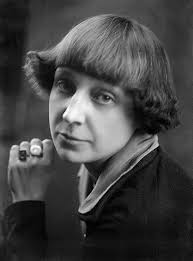

Поэты серебряного века
Здесь вы найдете информацию о знаменитых поэтах, чьСеребряный век в истории русской литературы - это эпоха, которая и соции произведения являются яркими представителями литературы серебряного века.
Серебряный век в истории русской литературы - это эпоха, которая пришлась на начало 20 века и связана с заметным развитием поэзии. Поэты Серебряного века отличались своей выразительностью и глубоким осмыслением жизни. Они умели отразить в своих стихах сложные душевные переживания, философские размышления и социальные проблемы.
я пришлась на начало 20 века и связана с заметным развитием поэзии.
Они умели отразить в своих стихах сложные душевные переживания, философские размышлени
Поэзия Серебряного века была оригинальной и разнообразной. Поэты этого времени обращались к различным темам и жанрам, отражая разнообразие культурных течений и идейной борьбы того времени. В их стихах можно встретить как лирическую нежность и красоту, так и глубокий анализ общественной жизни.
Имена таких поэтов, как Анна Ахматова, Осип Мандельштам, Сергей Есенин, Марина Цветаева, Владимир Маяковский, до сих пор вызывают восхищение и уважение. Их творчество останется навсегда в истории русской литературы как образец мастерства и глубокого понимания жизни.
Поэзия Серебряного века оставила неизгладимый след в русской культуре и стала важным компонентом национального литературного наследия. Ее ценность заключается не только в художественной красоте и уникальности, но и в способности выражать самые глубокие человеческие чувства и мысли.

Марина Цветаева
Сергей Есенин